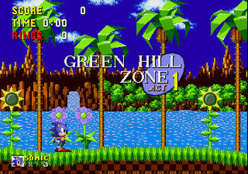
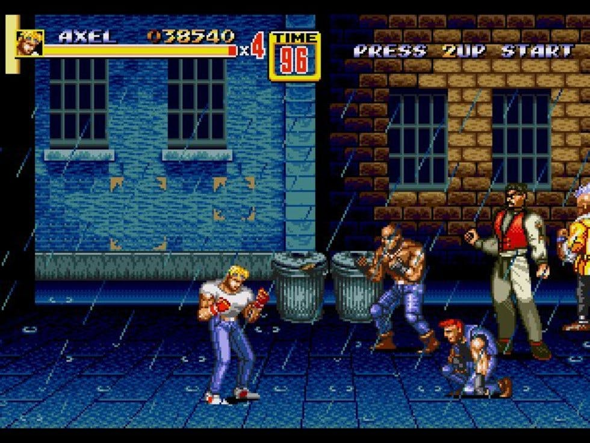
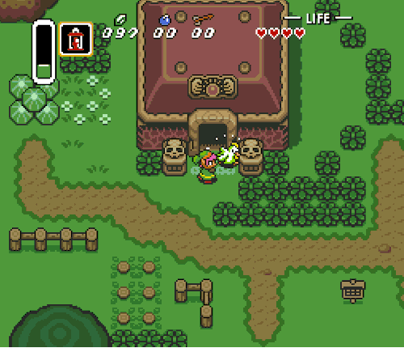
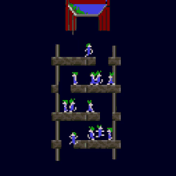

>
Viendo la salida de Super Nintendo, SEGA necesitaba mejorar su posición en el mercado.
En abril de ese mismo año Sega se puso el objetivo de que necesitaba la creación de un
videojuego que sustituyera a Alex Kidd como mascota de la compañía, y apareció Naoto Ōshima con un erizo azul (del mismo color que el logotipo de Sega), Sonic había llegado
para hacer frente a Mario.
En el juego, Sonic tenía que salvar a sus amigos animales secuestrados por el Doctor Robotnik, que quiere utilizarlos como fuente de energía para su ejército de robots con la intención de conquistar el planeta Mobius.
La gran diferencia con Super Mario Bros fue la velocidad y el dinamismo.
<

>
Este mismo año SEGA también descubrió al mundo otra joya de MegaDrive: Streets of Rage, un beat'em up ("yo contra el barrio") influenciado por Final Fight, caracterizado por ser una seguidilla incansable de acción, en donde movemos nuestro personaje de lado a lado
de la pantalla, aniquilando enemigos y recogiendo ítems (Power Up´s) como armas, dinero y comida.
<

>
Pero este año Nintendo aun tenía que dar un golpe en la mesa, y fue cuando se lanzó uno de los juegos más vendidos para la Super Nintendo, The Legend of Zelda: A Link to the past, el primer juego de Zelda en tener dos mundos paralelos a los que Link podía viajar. Hoy en día es considerado como uno de los mejores juegos de la saga.
<

>
Los Lemmings también llegan este año para casi todas las plataformas. Tenía un sistema
de juego completamente novedoso. Debíamos dirigir las acciones de un grupo de Lemmings
hasta llevarlos a la salida de cada nivel.
<
>
Aparece la segunda parte de Street Fighter y empieza la revolución de la saga. Había
bastantes diferencias con su antecesor. Por ejemplo, ahora teníamos a 8 personajes
entre los que elegir, 4 jefes finales y un final diferente para cada personaje.
Cada luchador tenía distintas características de fuerza, velocidad, técnicas y
movimientos especiales.
Tras el éxito en las recreativas se convirtió a casi todos los sistemas domésticos
de videojuegos.
<